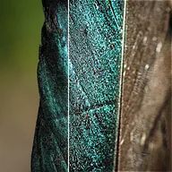

अनशार्प मास्क

लेयर और उसकी ब्लर की हुई कॉपी के अंतर को वापस जोड़कर शार्प करता है। स्ट्रेंथ बताता है कि ब्लर कितना फैला है, Amount कितना वापस जोड़ना है, और 50% से ऊपर थ्रेशोल्ड छोटे अंतरों को छोड़ देता है।
सेटिंग्स
| सेटिंग | प्रकार | रेंज | डिफ़ॉल्ट |
|---|---|---|---|
| स्ट्रेंथ | संख्या | 0 से 2 | 0.02 |
| मात्रा | संख्या | 0% से 200% | 50% |
| थ्रेशोल्ड | संख्या | -50% से 100% | 50% |
| मास्क दिखाएँ | चालू या बंद | – | बंद |